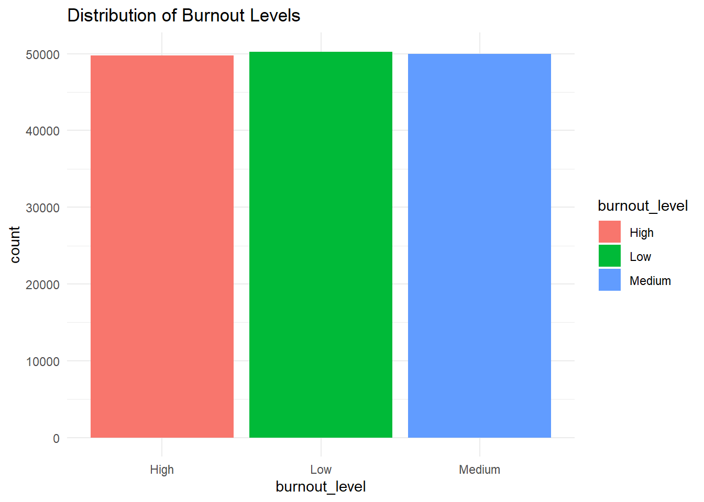
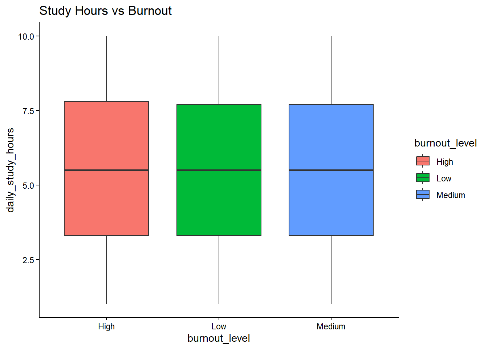
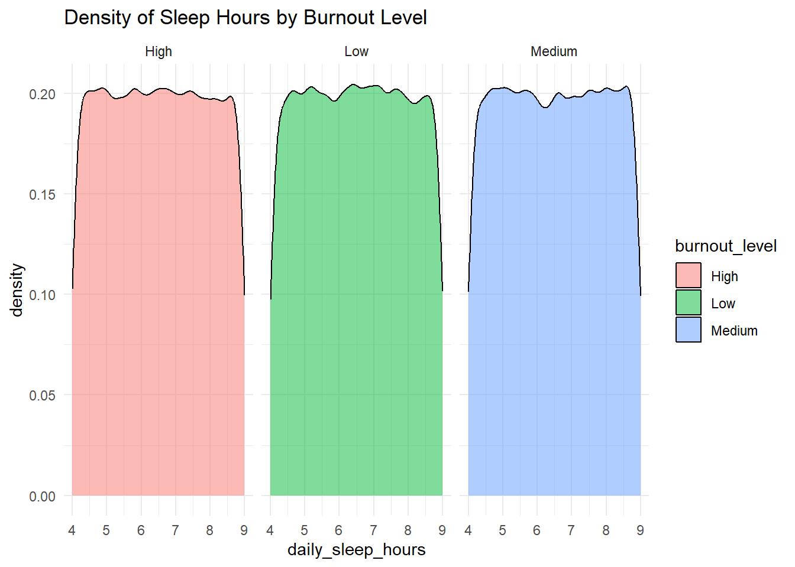
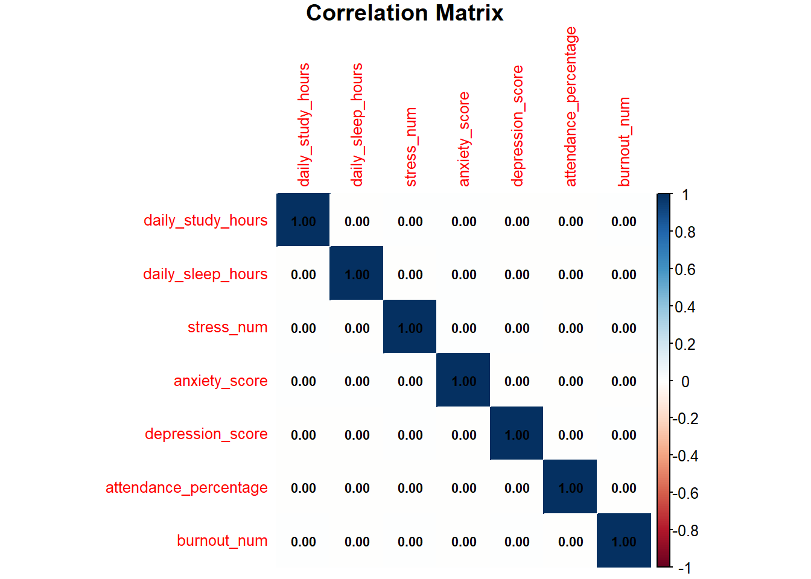
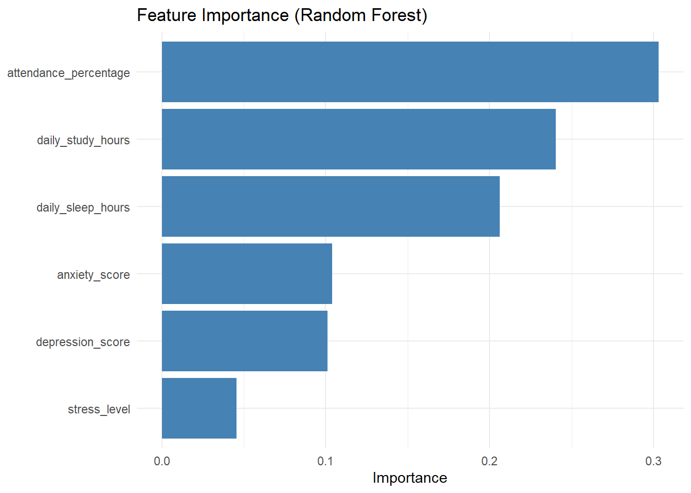
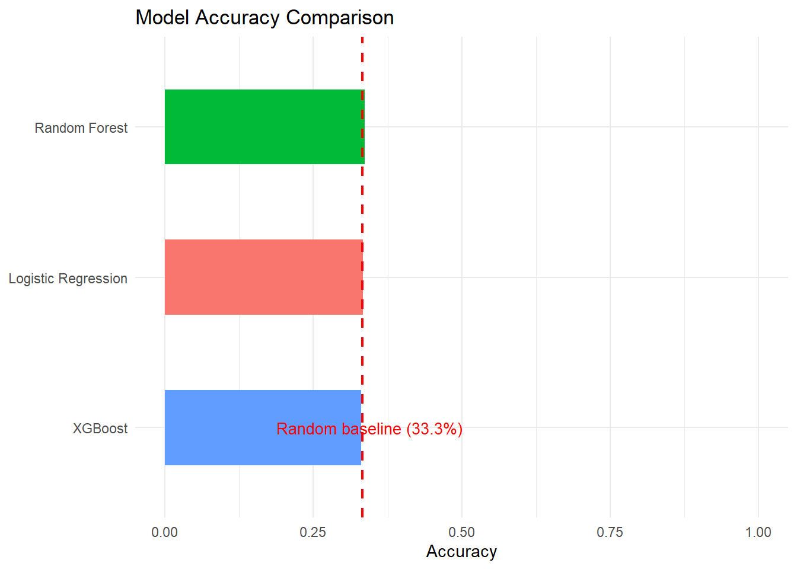

Code
library(reticulate)
py_install(c("pandas==2.1.4", "scikit-learn", "seaborn", "xgboost"))Using virtual environment "C:/Users/Damian/Documents/.virtualenvs/r-reticulate" ...library(reticulate)
py_install(c("pandas==2.1.4", "scikit-learn", "seaborn", "xgboost"))Using virtual environment "C:/Users/Damian/Documents/.virtualenvs/r-reticulate" ...library(dplyr)
library(ggplot2)
library(tidyverse)
library(corrplot)Student burnout is becoming a serious problem that affects learning and mental health. This project aims to check whether we can predict burnout using simple factors like study time, sleep, stress, and class attendance.
The analysis uses basic data exploration in R and machine learning models in Python, connected through the reticulate package.
data <- read.csv("student_mental_health_burnout.csv")
head_Data<- data.frame(head(data))
head_Data student_id age gender course year daily_study_hours daily_sleep_hours
1 100001 23 Male BTech 1st 4.3 6.8
2 100002 20 Male BTech 3rd 1.4 4.7
3 100003 24 Female BCA 4th 3.7 4.8
4 100004 21 Male BSc 4th 1.6 6.7
5 100005 23 Other BSc 4th 2.0 6.7
6 100006 19 Male BSc 3rd 8.2 4.8
screen_time_hours stress_level anxiety_score depression_score
1 6.1 High 10 3
2 3.0 High 2 10
3 1.5 Low 2 7
4 7.0 High 3 3
5 5.4 High 7 7
6 4.1 High 8 4
academic_pressure_score financial_stress_score social_support_score
1 4 2 6
2 8 5 9
3 8 6 3
4 4 9 9
5 6 4 4
6 9 8 2
physical_activity_hours sleep_quality attendance_percentage cgpa
1 1.8 Average 66.5 9.63
2 1.9 Poor 55.8 6.04
3 0.8 Good 85.0 8.31
4 0.7 Poor 89.1 5.95
5 1.7 Good 58.7 8.51
6 1.9 Poor 51.7 6.82
internet_quality burnout_level
1 Good High
2 Poor Low
3 Good High
4 Good High
5 Good Low
6 Average LowThe dataset contains three burnout categories: Low, Medium, and High. The distribution appears relatively balanced, which makes it suitable for classification tasks.
ggplot(data = data, aes(x = burnout_level, fill = burnout_level)) +
geom_bar() +
theme_minimal() +
labs(title = "Distribution of Burnout Levels")
Boxplot analysis shows that daily study hours are very similar across all burnout levels, suggesting weak separation between classes.
ggplot(data = data, aes(x = burnout_level, y = daily_study_hours, fill = burnout_level)) +
geom_boxplot() +
theme_classic() +
labs(title = "Study Hours vs Burnout")
The density plots of sleep hours reveal high overlap between burnout groups, indicating that sleep alone is not a strong predictor.
ggplot(data = data, aes(x = daily_sleep_hours, fill = burnout_level)) +
geom_density(alpha = 0.5) +
facet_wrap(~burnout_level) +
theme_minimal() +
labs(title = "Density of Sleep Hours by Burnout Level")
Aggregated statistics confirm that most numerical features (e.g., age, study hours, sleep) have nearly identical mean values across burnout levels.
This suggests that the dataset lacks strong differentiating signals between classes, which may limit the effectiveness of predictive models.
data %>%
group_by(burnout_level) %>%
summarise(across(where(is.numeric), mean, na.rm = TRUE))# A tibble: 3 × 14
burnout_level student_id age daily_study_hours daily_sleep_hours
<chr> <dbl> <dbl> <dbl> <dbl>
1 High 175065. 21.0 5.51 6.49
2 Low 174845. 21.0 5.51 6.50
3 Medium 175092. 21.0 5.51 6.50
# ℹ 9 more variables: screen_time_hours <dbl>, anxiety_score <dbl>,
# depression_score <dbl>, academic_pressure_score <dbl>,
# financial_stress_score <dbl>, social_support_score <dbl>,
# physical_activity_hours <dbl>, attendance_percentage <dbl>, cgpa <dbl>data_numeric <- data %>%
mutate(
stress_num = case_when(
stress_level == "Low" ~ 1,
stress_level == "Medium" ~ 2,
stress_level == "High" ~ 3
),
burnout_num = case_when(
burnout_level == "Low" ~ 1,
burnout_level == "Medium" ~ 2,
burnout_level == "High" ~ 3
)
) %>%
select(daily_study_hours, daily_sleep_hours, stress_num,
anxiety_score, depression_score, attendance_percentage,
burnout_num)The heatmap below confirms near-zero correlations between all features and burnout level, providing quantitative evidence of the dataset’s lack of predictive signal.
corr_matrix <- cor(data_numeric, use = "complete.obs")
corrplot(corr_matrix,
method = "color",
addCoef.col = "black",
number.cex = 0.7,
tl.cex = 0.8,
title = "Correlation Matrix",
mar = c(0,0,1,0))
Logistic Regression was the first model applied to the burnout classification task. Before training, all features were standardized using StandardScaler to ensure that differences in scale between variables such as anxiety scores (1-10) and attendance percentage (0-100) would not bias the model. The target variable and the categorical stress level feature were encoded numerically using LabelEncoder. The dataset was split into 80% for training and 20% for testing with a fixed random seed to ensure reproducibility. Logistic Regression is a linear model, meaning it can only capture linear relationships between features and the target making it a useful baseline, but limited when patterns are more complex.
import pandas as pd
import numpy as np
from sklearn.preprocessing import LabelEncoder, StandardScaler
from sklearn.model_selection import train_test_split
from sklearn.linear_model import LogisticRegression
from sklearn.ensemble import RandomForestClassifier
from xgboost import XGBClassifier
from sklearn.metrics import accuracy_score, classification_report
data = r.data
Y = data['burnout_level']
le_y = LabelEncoder()
Y_encoded = le_y.fit_transform(Y)
features = ['daily_study_hours', 'daily_sleep_hours','stress_level','anxiety_score', 'depression_score', 'attendance_percentage']
X = data[features]
le_stress = LabelEncoder()
X_encoded = X.copy()
X_encoded['stress_level'] = le_stress.fit_transform(X['stress_level'])
X_train, X_test, y_train, y_test = train_test_split(X_encoded, Y_encoded, test_size=0.2, random_state=2026)
scaler = StandardScaler()
X_train_scaled = scaler.fit_transform(X_train)
X_test_scaled = scaler.transform(X_test)
log_model = LogisticRegression(max_iter=1000)
log_model.fit(X_train_scaled, y_train)LogisticRegression(max_iter=1000)In a Jupyter environment, please rerun this cell to show the HTML representation or trust the notebook.
y_pred_lr = log_model.predict(X_test_scaled)
accuracy_lr = accuracy_score(y_test, y_pred_lr)
print(f"Logistic Regression Accuracy: {accuracy_lr:.4f}")Logistic Regression Accuracy: 0.3336print("\nClassification Report:")
Classification Report:print(classification_report(y_test, y_pred_lr, target_names=le_y.classes_)) precision recall f1-score support
High 0.33 0.32 0.32 9825
Low 0.34 0.38 0.36 10202
Medium 0.33 0.31 0.32 9973
accuracy 0.33 30000
macro avg 0.33 0.33 0.33 30000
weighted avg 0.33 0.33 0.33 30000Random Forest is an ensemble method that builds multiple decision trees on random subsets of the data and aggregates their predictions. Unlike Logistic Regression, it does not require feature scaling and is capable of capturing non-linear relationships. It was trained with 100 trees and a fixed random seed. An additional advantage of Random Forest is its ability to produce feature importance scores, which indicate how much each variable contributed to the model’s decisions providing interpretability even when predictive accuracy is low.
rf_model = RandomForestClassifier(n_estimators=100, random_state=2026)
rf_model.fit(X_train, y_train)RandomForestClassifier(random_state=2026)In a Jupyter environment, please rerun this cell to show the HTML representation or trust the notebook.
y_pred_rf = rf_model.predict(X_test)
accuracy_rf = accuracy_score(y_test, y_pred_rf)
print(f"Random Forest Accuracy: {accuracy_rf:.4f}")Random Forest Accuracy: 0.3366print("\nClassification Report:")
Classification Report:print(classification_report(y_test, y_pred_rf, target_names=le_y.classes_)) precision recall f1-score support
High 0.33 0.35 0.34 9825
Low 0.34 0.34 0.34 10202
Medium 0.34 0.32 0.33 9973
accuracy 0.34 30000
macro avg 0.34 0.34 0.34 30000
weighted avg 0.34 0.34 0.34 30000
# Eksport feature importance do R
importance_df = pd.DataFrame({
"feature": features,
"importance": rf_model.feature_importances_
}).sort_values("importance", ascending=False)XGBoost is a gradient boosting algorithm that builds trees sequentially, with each new tree correcting the errors of the previous one. It is widely considered one of the most powerful classification algorithms for tabular data and is often the top choice in machine learning competitions. It was configured with a multiclass log-loss evaluation metric and a fixed random seed.
xgb_model = XGBClassifier(eval_metric='mlogloss', random_state=2026)
xgb_model.fit(X_train, y_train)XGBClassifier(base_score=None, booster=None, callbacks=None,
colsample_bylevel=None, colsample_bynode=None,
colsample_bytree=None, device=None, early_stopping_rounds=None,
enable_categorical=False, eval_metric='mlogloss',
feature_types=None, feature_weights=None, gamma=None,
grow_policy=None, importance_type=None,
interaction_constraints=None, learning_rate=None, max_bin=None,
max_cat_threshold=None, max_cat_to_onehot=None,
max_delta_step=None, max_depth=None, max_leaves=None,
min_child_weight=None, missing=nan, monotone_constraints=None,
multi_strategy=None, n_estimators=None, n_jobs=None,
num_parallel_tree=None, ...)In a Jupyter environment, please rerun this cell to show the HTML representation or trust the notebook. y_pred_xgb = xgb_model.predict(X_test)
accuracy_xgb = accuracy_score(y_test, y_pred_xgb)
print(f"XGBoost Accuracy: {accuracy_xgb:.4f}")XGBoost Accuracy: 0.3301print("\nClassification Report:")
Classification Report:print(classification_report(y_test, y_pred_xgb, target_names=le_y.classes_)) precision recall f1-score support
High 0.32 0.33 0.33 9825
Low 0.34 0.34 0.34 10202
Medium 0.33 0.32 0.33 9973
accuracy 0.33 30000
macro avg 0.33 0.33 0.33 30000
weighted avg 0.33 0.33 0.33 30000results_df = pd.DataFrame([
{"model": "Logistic Regression", "accuracy": accuracy_lr},
{"model": "Random Forest", "accuracy": accuracy_rf},
{"model": "XGBoost", "accuracy": accuracy_xgb}
])All three models — Logistic Regression, Random Forest, and XGBoost — achieved an accuracy of approximately 33.33%, which equals random guessing for a balanced 3-class problem. This consistent result across models of varying complexity strongly suggests that the features used carry no predictive signal for burnout level.
importance_df <- py$importance_df
ggplot(importance_df, aes(x = reorder(feature, importance), y = importance)) +
geom_col(fill = "steelblue") +
coord_flip() +
theme_minimal() +
labs(title = "Feature Importance (Random Forest)",
x = NULL, y = "Importance")
results_df <- py$results_df
ggplot(results_df, aes(x = reorder(model, accuracy), y = accuracy, fill = model)) +
geom_col(width = 0.5) +
geom_hline(yintercept = 0.333, linetype = "dashed", color = "red", linewidth = 0.8) +
annotate("text", x = 1, y = 0.345, label = "Random baseline (33.3%)",
color = "red", size = 3.5) +
coord_flip() +
theme_minimal() +
labs(title = "Model Accuracy Comparison",
x = NULL, y = "Accuracy") +
scale_y_continuous(limits = c(0, 1)) +
theme(legend.position = "none")
The results of this analysis reveal that burnout level cannot be predicted from the available features. All three classifiers performed at chance level (~33%), regardless of model complexity or feature scaling.
Correlation analysis confirmed near-zero relationships between all features and the target variable. This is consistent with the synthetic origin of the dataset — burnout labels were assigned independently of feature values during generation.
This finding serves as an important methodological reminder: a high usability score on Kaggle does not guarantee predictive utility. For real-world burnout prediction, longitudinal studies with clinically validated instruments would be required.